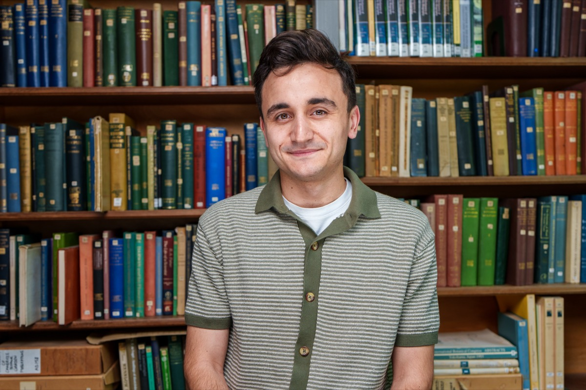
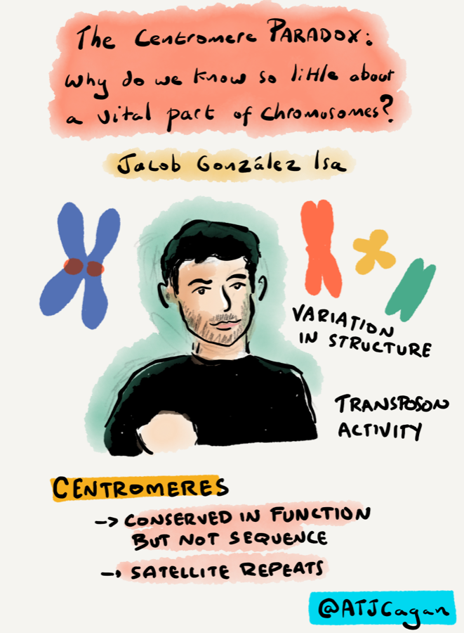
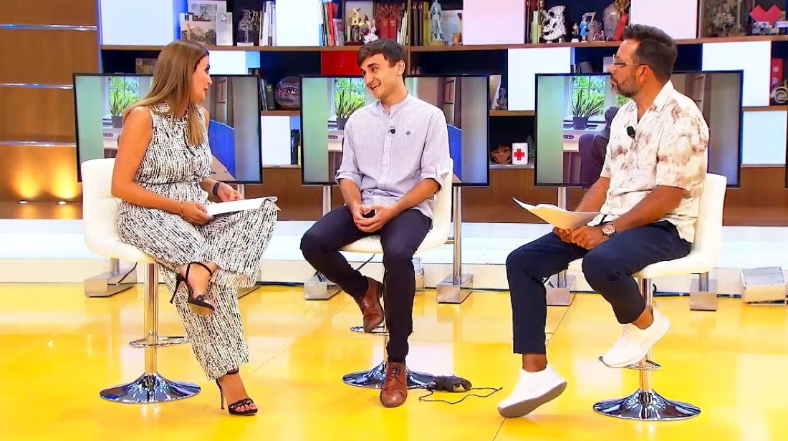

Jacob González Isa
PhD candidate at the University of Cambridge studying the centromere paradox — how the most essential region of the chromosome is also one of the fastest-evolving. I work across long-read sequencing, comparative genomics and molecular genetics, and build the tools that make previously invisible biology measurable.
"Evolution is, to me, the most fascinating thing in life."

Research
The most important part of your DNA
is also one of the fastest to change.
Every time a cell divides, the centromere is the anchor that pulls your chromosomes apart. Get it wrong and the cell ends up with the wrong number of chromosomes — something behind cancer and infertility. So you'd expect evolution to leave it untouched. Instead, the DNA underneath is a churning sea of repeats that gets rewritten surprisingly fast between species. That contradiction is the centromere paradox — and it's the heart of my PhD in the Henderson lab.
I come at it from both sides: as a computational biologist (long-read genomes, phylogenomics, comparative and 3C genomics, protein language models) and in the wet lab (IP–MS, Pore-C, Nanopore sequencing). What I enjoy most is building the tool that makes previously invisible biology finally measurable.
Essential, yet unstable
How does a region under intense functional constraint survive while its sequence rewrites itself over evolutionary time?
Bench meets cluster
Wet-lab sequencing paired with reproducible Nextflow / SLURM pipelines and comparative analysis at scale.
Henderson lab, Cambridge
Genetic & Epigenetic Inheritance in Plants — centromere architecture, recombination and chromatin folding.

Selected projects & tools
What I build
A selection of research projects and open-source tools. Each includes a short interactive visual of the underlying idea — select one to explore.
Training & trajectory
From Seville to Cambridge
First in my family to attend university. A path across several countries, competitive scholarships throughout, and a consistent focus on genome evolution.
Media & outreach
Communicating science
As a first-generation researcher, I care about widening access to science. Selected interviews and features — including a series that reached roughly a million people.

▶ Canal Sur · Live TVOn air
"La tarde, aquí y ahora"
Live on Canal Sur's flagship afternoon show — talking centromeres, evolution, and the road from Seville to Cambridge.
Watch the interview →Leadership & service
Beyond research
Red Pioneros
An NGO helping first-generation and working-class students access higher education — the support I wish I'd had. redpioneros.org →
Nucleate Spain
Co-leading the Spanish chapter of the largest global community of bio-innovators, mentoring teams translating research toward impact.
Tea Phytologist (XXI Century Editions)
Cambridge Plant Sciences' student-run satirical journal, relaunched after four decades. Read more →
Awards & distinctions
Nova 111 top-10 Spanish bioscientist · Extraordinary End-of-Degree Award · Rafael del Pino Fellowship (declined) · 3rd, Portuguese Bioinformatics League.
Contact
Get in touch
Open to collaborations in genome evolution, centromere biology, phylogenomics and long-read methods — or simply for a chat. Feel free to reach out.